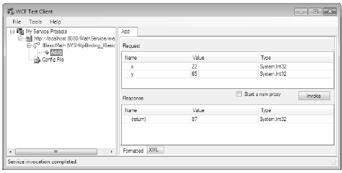
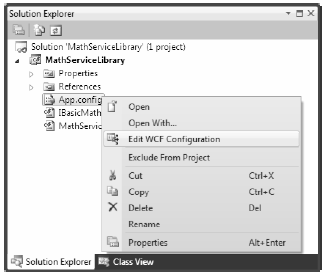
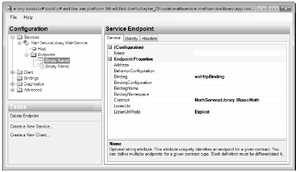

You need to do one more thing before you build a more exotic WCF service that communicates with the AutoLot database you created in Chapter 21. The next example will illustrate a number of important topics, including the benefits of the WCF Service Library project template, the WCF Test Client, the WCF configuration editor, hosting WCF services within a Windows service, and asynchronous client calls. To stay focused on these new concepts, this WCF service will be kept intentionally simple.
To begin, create a brand-new WCF Service Library project named MathServiceLibrary, making sure you select the correct option under the WCF node of the New Project dialog box (see Figure 25-2 if you need a nudge). Now change the name of the initial IService1.cs file to IBasicMath.cs. Once you do so, delete all of the example code within the MathServiceLibrary namespace and replace it with the following code:
[ServiceContract(Namespace="http://MyCompany.com")] public interface IBasicMath { [OperationContract] int Add(int x, int y); }
Next, change the name of the Service1.cs file to MathService.cs, delete all the example code within the MathServiceLibrary namespace (again), and implement your service contract as follows:
public class MathService : IBasicMath { public int Add(int x, int y) { // To simulate a lengthy request. System.Threading.Thread.Sleep(5000); return x + y; } }
Finally, open the supplied App.config file and verify all occurrences of IService1 with IBasicMath, as well as all occurrences of Service1 with MathService. Also take a moment to notice that this *.config file has already been enabled to support MEX; by default, your service endpoint uses the wsHttpBinding protocol.
One benefit of using the WCF Service Library project is that when you debug or run your library, it will read the settings in the *.config file and use them to load the WCF Test Client application (WcfTestClient.exe). This GUI-based application allows you to test each member of your service interface as you build the WCF service; this means you don’t have to build a host/client manually simply for testing purposes, as you did previously.
Figure 25-9 shows the testing environment for MathService. Notice that when you double-click an interface method, you can specify input parameters and invoke the member.
Figure 25-9 Testing the WCF service using WcfTestClient.exe
This utility works out of the box when you have created a WCF Service Library project; however, be aware that you can use this tool to test any WCF service when you start it at the command line by specifying a MEX endpoint. For example, if you were to start the MagicEightBallServiceHost.exe application, you could specify the following command at a Visual Studio 2010 command prompt:
wcftestclient http://localhost:8080/MagicEightBallService
Once you do this, you can invoke ObtainAnswerToQuestion() in a similar manner.
Another benefit of making use of the WCF Service Library project is that you are able to right-click on the App.config file within the Solution Explorer to activate the GUI-based Service Configuration Editor, SvcConfigEditor.exe (see Figure 29-10). This same technique can be used from a client application that has referenced a WCF service.
Figure 25-10 GUI-based *.config file editing starts here
Once you activate this tool, you can change the XML-based data using a friendly user interface. Using a tool such as this to maintain your *.config files provides many benefits. First (and foremost), you can rest assured that the generated markup conforms to the expected format and is typo-free. Second, it is a great way to see the valid values that could be assigned to a given attribute. Finally, you no longer need to author tedious XML data manually.
Figure 25-11 shows the overall look-and-feel of the Service Configuration Editor. Truth be told, an entire chapter could be devoted to describing all of the interesting options SvcConfigEditor.exe supports (e.g., COM+ integration and creation of new *.config files). Be sure to take time to investigate this tool; also be aware that you can access a fairly detailed help system by pressing F1.
Note The SvcConfigEditor.exe utility can edit (or create) configuration files, even if you do not select an initial WCF Service Library project. Use a Visual Studio 2010 command window to launch the tool, and then use the File > Open menu option to load an existing *.config file for editing.
Figure 25-11 Working with the WCF Service Configuration Editor
You have no need to further configure your WCF MathService; at this point, you can move on to the task of building a custom host.